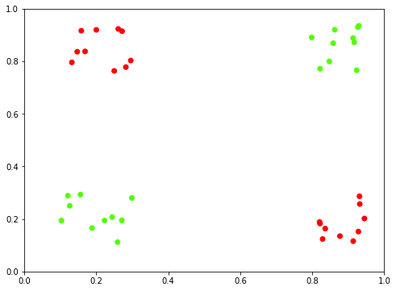
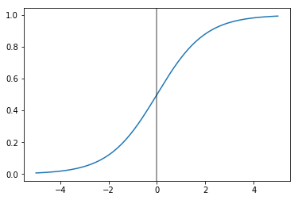
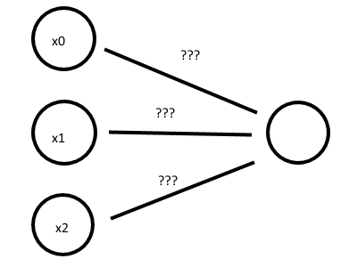
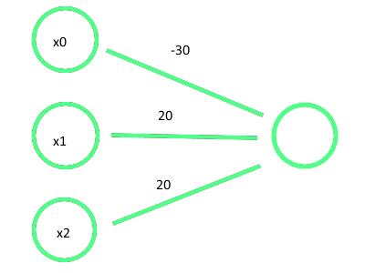
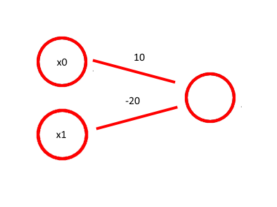
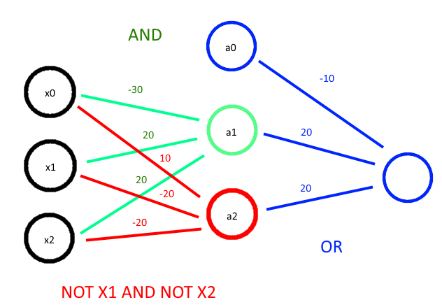
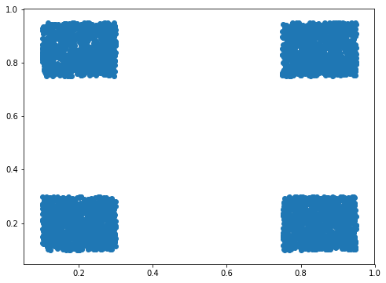
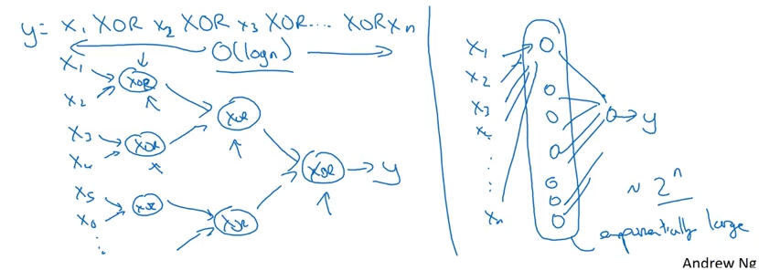

Representing XNOR via a simple Net
Imagine we want to build a simple classifier for the following datset, XNOR, that follows the truth table:
| x1 | x2 | XNOR |
| 0 | 0 | 1 |
| 0 | 1 | 0 |
| 1 | 0 | 0 |
| 1 | 1 | 1 |
When we plot this out visually, it’s clear that there’s no good way to do this in any sort of linear fashion. Where would you draw a straight line to get good separability?
%pylab inline
from IPython.display import Image
from helpers.xnor import make_xnor_dataset, plot_xnor_dataset
X, y = make_xnor_dataset(10)
plot_xnor_dataset(X, y);Populating the interactive namespace from numpy and matplotlib

Deconstructing
More specifically, if we want to represent the entirety of the truth table, we can do so with
$ \big( X1 \wedge X2 \big) \lor \big((\neg X1) \wedge (\neg X2) \big)$
Which can, in turn, be broken down into sub-expressions. But first, recall our sigmoid function from logistic regression, used to convert a prediction coefficient between 0 and 1 to a binary prediction.
x_ = np.linspace(-5, 5, 1000)
y_ = 1 / (1 + np.exp(-x_))
plt.plot(x_, y_)
plt.gca().axvline(0, c='k', alpha=.5)<matplotlib.lines.Line2D at 0x8046b00>

With an acceptance value of 0.5, our True values will be the ones that get piped through the sigmoid function and come out the other side with a value greater than 0.5. Simplifying, this means that if we want to output a True value, we just have to make sure that the linear combination that goes into the sigmoid is greater than zero
So breaking down the XNOR representation above, we used the following 3 symbols:
- And
- Or
- Not
AND
Consider a simple dummy-Network where we’re trying to determine the weights, per sample, for nodes X1 and X2, which will stand in for the X and Y coordinates above. Also recall that we use the bias unit, X0 regardless of the value of our traning example.
Image('images/weights.png')
We want to figure out weights for each of these nodes such that all True/False combinations that come in for X0 and X1 ensure a correct truth table. Thus, we arrive at
Image('images/and.PNG')
Yielding the following truth table
| x1 | x2 | z | AND |
| 0 | 0 | -30 | 1 |
| 0 | 1 | -10 | 0 |
| 1 | 0 | -10 | 0 |
| 1 | 1 | 10 | 1 |
OR
We can follow a similar exercise for OR to get
Image('images/or.PNG')
| x1 | x2 | z | OR |
| 0 | 0 | -10 | 1 |
| 0 | 1 | 10 | 0 |
| 1 | 0 | 10 | 0 |
| 1 | 1 | 30 | 1 |
NOT
And a much-simpler NOT gives
Image('images/not.png')
| x1 | z | NOT |
| 0 | 10 | 1 |
| 1 | -10 | 0 |
Combining
Using the same intuition as above, we can detangle this messy logical statement into a network that looks like the following
$ \big( X1 \wedge X2 \big) \lor \big((\neg X1) \wedge (\neg X2) \big)$
Image('images/xnor.png')
And verify this checks out via the Truth Table (and a lot of tedious HTML)
| x1 | x2 | z1 | a1 | z2 | a2 | OR |
| 0 | 0 | -30 | 0 | 10 | 1 | 1 |
| 0 | 1 | -10 | 0 | -10 | 0 | 0 |
| 1 | 0 | -10 | 0 | -10 | 0 | 0 |
| 1 | 1 | 30 | 1 | -30 | 0 | 1 |
Implementing
Generating more training data, split equally on True and False
X, y = make_xnor_dataset(1000)
fig, ax = plt.subplots(figsize=(8, 6))
ax.scatter(X[:, 0], X[:, 1]);
from tensorflow.keras.models import Sequential
from tensorflow.keras.layers import Dense
model = Sequential()
model.add(Dense(units=2, activation='tanh', input_dim=2))
model.add(Dense(units=1, activation='sigmoid'))model.compile(loss='binary_crossentropy',
optimizer='adam')model.fit(X, y, epochs=200, verbose=0);predictions = (model.predict(X) >= .5).reshape(-1).astype(int)
plot_xnor_dataset(X, predictions);
And how!
Efficiency
We managed to represent this behavior in 1 hidden layer. But consider what would have happened if we wanted to do a similar problem– computing *Exclusive OR for 10 inputs*. As Andrew Ng points out in Week 4 of his Deep Learning course, representing this as a deep neural network will be orders of magnitude more efficient than as a tall hidden layer.
This relies on the same principle of exponential growth– splitting things by a factor of 2, vs enumerating all of the 2-to-the-n different nodes.
Image('images/xor_exp.png')